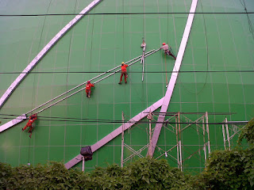

Semakin berkembangnya dunia pembangunan, maka hadir banyak material penambah yang melengkapi keindahan sebuah banguanan. Fungsi utama kaca merupakan sebagai pencahayaan natural dan juga sebagai komponen dari keindahan bangunan. Banyak macam dari kaca yang dapat di gunakan untuk banguan ataupun rumah tinggal.
Kini telah hadir berbagai maca jenis kaca yang dapat ditemui, tiap kaca mempunyai fungsinya masing-masing. Bisa untuk system keamanan, keindahan dan masih banyak yang dapat di temukan dari pemasangan kaca. Ragam kaca-kaca tersebut diantaranya merupakan kaca tempered, kanopi kaca, kaca frameless, kaca cermin, railing kaca dan masih banyak variasi kaca lainnya yang dapat anda dapatakan dan anda aplikasikan pada bangunan. Tak hanya material kaca sekarang juga terdapat material kayu atau parket lantai kayu jati.
Distributor & Supplier Pintu Kaca di Surabaya

Kerja ini banyak figur pintu seperti sesuai dengan ada di bayangan Anda. Anda dapat pilih desain seperti apa yang Anda sukai. Tersedia juga almunium dan kayu sekiranya Anda berharap memiliki pintu kaca Surabaya dengan frame. Tersedia sebagian variasi kaca dengan kwalitas yang terbaik, mulai dari kaca tempered sampai yang non-tempered.
Anda bisa menerima pintu kaca Surabaya yang diperlukan dengan mangunjungi dis.or.id. Amati Ukuran serta ketebalan menyesuikan dengan kemauan Anda.
Anda bisa memilih kaca tempered yang sekarang ini sedang naik daun.
Info Pemesanan Selengkapnya
Google Maps: https://www.google.com/maps/d/u/0/viewer?mid=1Oev1fV01o8gQSuJ72jMMShl0CllevHqY&ll=-7.27380280025364%2C112.65243155000007&z=18
Event: https://www.facebook.com/events/174522916469442/
Portfolio Produk: https://www.facebook.com/1681607345472479/photos/?tab=album&album_id=1712632585703288
Jasa Pemasangan Railing Kaca

Railing kaca menjadi salah satu bagian yang akan membuat nampak sungguh-sungguh minimalis. Mungkin hal ini disebabkan semakin banyak pemilik rumah yang berharap menampilkan sebuah desain interior rumah yang benar-benar minimalis. Lupakan bahan seperti kayu. Pemilik rumah berharap sekali memiliki interior yang semacam itu minimalis. Dalam hal kaca, Anda dapat memilih kaca tempered. Sebaiknya pakai kaca tempered sebab tipe kaca ini benar-benar kuat. Tetapi, bukan hanya figur yang sebaiknya Anda jadikan pertimbangan dikala berkeinginan memesan railing kaca ini.
Dalam hal ini, ada banyak ragam kaca yang bisa diterapkan untuk membuat railing ini. Anda bisa pertimbangkan untuk memakai kaca tempered. Ini ragam kaca yang sungguh-sungguh kuat. Sekiranya itu, kaca ini dapat pecah namun tak memunculkan pecahan yang runcing melainkan pecahan kecil-kecil dan lembut. Dengan demikian, pecahan tak akan melukai siapapun. Pecahannya sangat kecil dan lembut sehingga tidak akan melukai siapapun yang terkena pecahan. Kini pasti, railing kaca ini menjadi pilihan yang pas. Pastikan juga aluminum ini benar-benar baik dan kuat.
Harga yang sungguh-sungguh ekonomis serta kualitas terbaik yang telah terjamin membuat anda tak akan menyesal membeli railing kaca di dis.or.id. Tentu dengan harga yang murah namun konsisten berkelas.
Distributor, Supplier & Jasa Pasang Kanopi Kaca
Pintu Kaca Shower pada kamar mandi ialah salah satu opsi yang bagus untuk desain interior kamar mandi modern. Bila akan memberikan kesan lapang saat berada di kamar mandi, mandi dengan shower akan memberikan kesegaran tersendiri dibanding kamar mandi dengan bak mandi. Harga atap kaca per meter persegi juga betul-betul diberi pengaruh oleh struktur pendukung yang di gunakan. Disinilah letak perbedaan optis yang utama antara akrilik (acrylic) dengan kaca. Seandainya tembus pandang, kaca menyerap cahaya yang masuk sehingga semakin tebal kaca karenanya kian sedikit sinar yang bisa melaluinya, karenanya sifat transparannya makin berkurang.|Di samping pintu kaca shower akan membikin kamar mandi kecil terlihat lebih besar. Pada atap akrilik, absorpsi cahaya yang terjadi demikian kecil sehingga sedangkan ketebalannya bertambah, sifat transparannya tidak banyak berubah. Atap akrilik atau bisa juga disebut atap kaca acrylic ini banyak ditemukan di sebuah bangunan rumah, seperti ruko, apartemen, cafe, mall, sampai bangunan gedung.
Sekarang anda dapat mendapatkan kanopi kaca dengan kwalitas terbaik dan juga berkualitas di dis.or.id. Ini nampak dari bahan material yang di pakai dalam pembuatan kanopi kaca. Kalau itu, kanopi juga bisa melindungi mobil dan kendaraan lain anda. Setelah kaca untuk atap kanopi cukup digemari.
Distributor & Supplier Kaca Shower
Kaca shower ialah kotak atau alat yang berfungsi sebagai penyekat ruang khusus untuk kamar mandi. Dengan menerapkan kaca shower pastinya kamar mandi yang dimiliki akan lebih kelihatan mewah dan menjadi sekat antara zona berair dan zona kering. Kelebihan shower screen dibanding dengan metode penyekatan yang lain yakni diciptakan dalam wujud yang telah jadi dan tinggal dipasang saja. Jadi sistemnya jauh lebih praktis sebab tak perlu menyiapkan bahan sendiri untuk membikin sekat ruang. Di samping pintu kaca shower akan membuat kamar mandi kecil menonjol lebih besar. Kita tidak perlu repot lagi mencari tukang sendiri sebab pemasangan alat sekat ini memang membutuhkan teknik tersendiri.
Tidak anda sedang membutuhkan kaca shower, hal yang perlu anda lakukan merupakan mengunjungi dis.or.id. Disana tersedi kaca shower dengan bermacam ukuran dan juga harga yang juga cukup terjangkau. Harga yang ditawarkan malahan tergolong sungguh-sungguh murah. Anda dapat buktikan sendiri.
Distributor, Supplier & Jasa Pasang Kanopi Kaca
Salah satu ragam kanopi kaca yang dapat anda aplikasikan pada atap ialah atap kaca skylight yang yaitu kanopi kaca dalam bentuk jendela horizontal atau kubah yang biasanya ditempatkan di atap bangunan yang memiliki maksud untuk pencahayaan ruangan. Atap kaca skylight banyak dipakai pada rumah, gedung, kantor, café yang mengusung gaya modern untuk membikin efek sinar yang dramatis pada ruangan bagian bawahnya serta memberi kesan modern pada bangunan. Canopy kaca dengan atap kaca memang sebuah bangunan yang asangat elgan untuk jaman modern seperti kini ini dengan harga yang sangat lumayan apabila di bandingkan kanopi atap biasa. Jadi telah tak heran lagi segala orang mau mencari harga yang sangat kompetitif untuk menyesuaikan budget atau anggaran mereka masing – masing untuk membikin produk canopy kaca. Seandainya tembus pandang, kaca menyerap cahaya yang masuk sehingga kian tebal kaca karenanya semakin sedikit cahaya yang bisa melaluinya, karenanya sifat transparannya makin berkurang.|Di samping pintu kaca shower akan membuat kamar mandi kecil tampak lebih besar.
Seiring dengan perkembangan dunia properti, sekarang kanopi kaca tempered sudah berkembang pesat mencontoh arsitektur modern. Kalau fungsi utama kanopi sebagai pelindung untuk bangunan hal yang demikian, pemasangan kanopi kaca juga bisa membuat bangunan menjadi nampak lebih indah dan menarik, apalagi menggunakan konsep yang sama dengan konsep rumah minimalis. Sesudah kaca untuk atap kanopi cukup digemari.
Jasa Maintenance Kaca

Jasa maintenance kaca telah menjadi pilihan ideal jikalau Anda berharap menjalankan perawatan gedung yang terbuat dari kaca. Dengan kian berjalan nya waktu tentu gedung yang mempunyai bahan kaca pada sisinya memerlukan perawatn khusus agar tetap awet dan tahan lama. Jasa maimtenence kaca menyediakan layanan pembersihan kaca gedung serta pembetulan kaca gedung yang rusak, pecah dan tak layak lagi untuk di pakai. Kaca amat membutuhkan perawatan karena tiap hari terkena cahaya sang surya atau juga hujan. Pelbagai, kaca akan terlihat kusam karena telah lama tak dibersihkan. Kalau itu, sanggup membersihkan bangunan kaca melengkung.
Dengan menggunakan bahan pembersih yang akan membikin kaca nampak bersih seperti pertama kali dipasang. Kalau juga dengan warna dan bentuk kaca.
Dis.or.id adalah perusahaan jasa di bidang maintenance kaca gedung dengan memberikan sebagian pelayanan. Salah satunya pelayanan berupa pembersihan kaca dengan menerapkan alat pembersih yang bisa membuat kaca gedung Anda tampak bersih seperti sediakala. Tersedia alat pensupport supaya segala sisi gedung yang terbuat dari kaca dapat dipastikan semua sisi gedung dapat di bersihkan. Dengan telah memberikan training terhadap energi spesialis sehingga mereka sudah bisa melaksanakan profesi mereka dengan amat bagus. Selain hanya dalam hal membersihkan kaca, mereka juga kapabel melaksanakan pembenaran serta penggantian kaca yang mengalami kerusakan.
Jasa Pemasangan Kaca Tempered

Tak anda mebutuhkan jasa maintenance kaca, anda bisa mengunjungi dis.or.id. Kian banyak orang yang ingin menerapkan kaca ini. Sekarang alat khusus untuk memotong macam kaca yang satu ini. Sementara itu, untuk rumah hunian, komponen dari rumah seperti kamar mandi serta kanopi biasanya terbuat dari kaca tempered. Selain ini tidak lain karena semakin banyak orang yang memahami mutu serta keunggulan dari kaca tempered ini.
Banyak hal yang dapat dilakukakn kaca tempered ini salah satunya sebagai pembatas, untuk kamar mandi dan masih banyak lagi. Harga untuk tiap-tiap pemasangan dijamin termurah dan hasil progres yang pantas dengan kemauan anda. Bukan sembarang alat yang dipakai untuk memotong kaca tempered sesuai dengan keperluan. Tak ketika ini anda sedang mau membangun suatu bangunan atau gedung, anda bisa memanfaatkan kaca tempered untuk dipakai seketika ke seluruh variasi bidang. Lebih dari itu, dis.or.id sudah menyiapkan energi ahli yang siap untuk melakukan pemasangan, entah itu kaca tempered untuk kanopi, pintu, partisi, balkon, dan lain sebagainya.
Jual Kaca Cermin
Kaca cermin sekarang mempunyai desain yang berbeda. Kaca cermin dilapisi dengan pelapis transparan tipis dan oksida logam sebagai lapisan pelapis. Sekarang, cermin tak cuma berbentuk persegi saja. Banyak produsen kaca cermin yang membuat dengan desain yang berbeda. Kini, cermin tidak hanya berbentuk persegi atau persegi panjang saja. Pun, ada juga desain kaca cermin yang unik. Jadi, Anda dapat sesuaikan desainnya dengan desain ruangan yang akan Anda pilih untuk menempatkan cermin tersebut. Sementara itu, dikala diamati dari luar, kaca ini reflektif. Cermin minimalis mempunyai siku.
Anda juga dapat tentukan apakah berharap memiliki cermin yang memiliki pigura atau tidak. Dan bahan yang diaplikasikan untuk membikin frame pun berbeda-beda. Atau Anda dapat memilih cermin yang dibangkai dengan beraneka variasi bahan seperti kayu, aluminum, plastik, dan bahan lainnya. Dengan jenis kaca ini, orang yang berada di luar ruangan tak bisa mengamati apa yang ada di dalam ruangan. Sementara itu, Anda yang berada di dalam ruangan dapat memandang orang lain yang ada di luar. Cermin ini umumnya ditempatkan di kamar mandi, di atas wastafel, atau di kamar tidur. Jadi, orang di luar tak bisa melihat Anda berada di dalam. Tapi, Anda bisa mengamati orang lain dari dalam rumah. Dis.or.id menyediakan kaca cermin yang bisa anda beli dengan harga yang betul-betul murah dan dengan mutu terbaik.
Distributor & Supplier Pintu Lipat Kaca
Lalu, berapakah harganya? Anda mungkin mengira bahwasannya kaca ini ditawarkan dengan harga selangit. Apalagi sekiranya taman Anda terbuka sehingga pencahayaan alami masuk. Maka, sinar itupun akan masuk ke dalam ruang makan sebab penyekatnya terbuat dari pintu kaca transparan.
Ukuran kaca menjadi unsur penentu berapa harga pintu kaca lipat yang Anda inginkan. Tapi bukan itu saja, aksesoris komplemen juga berdampak. Anda patut menentukan aksesoris yang melengkapi pintu kaca lipat memiliki mutu terbaik, seperti figur hinges.
Jasa Pemasangan Kubikel Toilet
Kubikel WC memiliki desain yang mewah dan elegan sehingga siapa saja yang memandangnya pasti akan tertarik, tidak hanya itu kubikel kaca memberikan kesan bersih, rapid an tersusun. Banyak profit yang dapat di daptkan dengan mengaplikasikan kubikel kamar mandi diantaranya yaitu tampilan yang lebih elegan dan lebih bersih.
Anda juga dapat membuat toilet di space yang lebih kecil dan tak memerlukan lahan yang semacam itu besar untuk membikin WC yang banyak. Kaca sebagai penyekat dalam kamar mandi lazim disebut kaca shower. Kaca shower banyak digunakna karena memberikan kesan mewah.
Sekiranya anda mau memiliki kubikel kamar kecil ini, anda bisa mengunjungi laman dis.or.id.
Karena disana terdapat beraneka ukuran kubikel WC yang dapat anda jadikan alternatif untuk hunian atau temap usaha anda. Justru embun dapat melekat di kaca dan lambat laun dapat membuat kaca tidak sejernih semula. Kaca shower yang di jual di jamin kaca shower yang mempunyai mutu terbaik dan berkwalitas tinggi.
Distributor & Supplier Partisi Kaca

Partisi kaca menjadi pilihan yang ideal bagi Anda yang berharap menghemat tarif bangunan. Banyak rumah hunian yang sekatnya kini terbuat dari kaca. Belum lagi pemasangan yang tidak murah. yang satu ini tergantung lama proses. Berbeda Anda memilih partisi kaca. Anda bisa menerima partisi kaca yang anda inginkan di dis.or.id. Akan namun, Anda semestinya selektif dalam hal memilih kaca untuk partisi. Anda sepatutnya tahu ada kaca transparan, semi transparan dan kaca yang sama sekali transparan yang acap kali disebut dengan kaca cermin. Sebab juga dengan kaca. Karena variasi kaca ini mempertimbangkan privacy ruangan yang disekat. Ada kaca transparan, semi transparan, dan juga kaca cemin yang ruangan benar-benar privat. Seandainya anda kesusahan untuk memasang dinding kaca penyekat, dis.or.id menyediakan jasa pemasangan dinding kaca penyekat untuk kamar mandi rumah anda. Disana anda akan partisi kaca yang pantas dengan harapan anda.